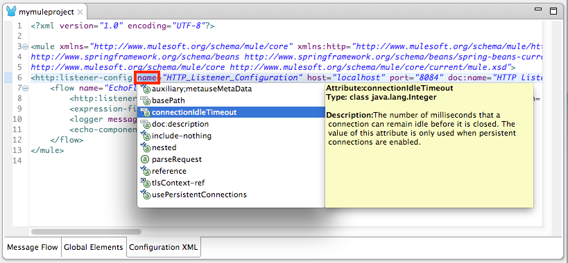
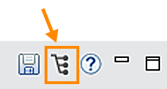

Anypoint Studio
Anypoint Studio is MuleSoft’s Eclipse-based integration development environment for designing and testing Mule applications. You can deploy the application and run it on your Mule server.
The same editor also allows you to edit API definition files (in RAML and WSDL), create domains that define shared resources.
Anypoint Studio offers two parallel tabs that you can utilize to design and craft your applications:
-
Visual Editor
-
XML Editor
What you do in one editor reflects in the other. For example, if you drop a connector onto the Visual Editor canvas, the addition of the connector element to your application is recorded in the XML Editor. This real-time reflection of changes is referred to as two-way editing. Same application, two different editors.
Notes:
-
In each guide in the documentation set, you can click a graphic to view an expanded illustration.
-
You can zoom the Anypoint Studio Visual Editor using the CMD/+ or - keys on a Mac, or CTRL/+ or - keys in Windows
| To check your version of Anypoint Studio, go to Anypoint Studio > About Anypoint Studio. |
The Visual Editor
Studio’s visual editor is divided into several parts:
-
Package Explorer
-
Canvas
-
Palette
-
Connection Explorer
-
Console
-
DataSense Explorer
The Package Explorer displays project folders and files in a tree format. Click to expand or contract Mule project folders and examine the files that make up a Mule project.
The Canvas provides a space for arranging pre-packaged building blocks into Mule applications. The Palette, on the right edge of the canvas, displays a list of building blocks that you can drag and drop onto the canvas to build your application. At the base of the canvas, Studio offers three tabs which offer different ways to interface with your application:
-
Message Flow: Drag-and-drop interface in which you arrange building blocks to form an application
-
Global Elements: Interface for creating or editing reusable configurations for Mule building blocks
-
Configuration XML: XML editor interface displays the XML elements that correspond to the building blocks arranged on the Message flow canvas
The Connection Explorer displays a list of any global connector configurations defined in your application for quick access to your configuration details. Behind this tab, a second tab contains an outline, which displays a miniaturized overview of the whole canvas, along with a box cursor that scrolls with the display in the canvas pane. This provides a high-level, bird’s-eye view of your complete Mule application as it extends beyond the borders of the canvas.
The Console area below the canvas contains the console for the embedded Mule server, which displays a list of events and problems (if any) that Studio reports as you create or run your Mule application. In the console area, you also have a properties editor. The properties editor tab is labeled with the name of the building block that is currently selected on your canvas, or with "Mule Properties View" when no building block is selected. The properties editor includes the DataSense Explorer, which supplies real-time information about the data structure of your payload and any available inbound and outbound properties or variables. See an example of the properties editor below.
The Properties Editor
Anypoint Studio’s Visual Editor enables you to click a building block on the canvas to access its Properties Editor in a tab in the console (below).
Click the tabs at left (in the above example, General, Advanced, References and Documentation) to access various categories of attributes associated with the building block.
Autocompletion for Mule Expression Language (MEL)
If you are configuring a field that supports expressions and need help with syntax, you can access MEL suggestions by one of two methods.
-
Place your cursor inside the brackets in a field that has
#[]pre-populated for you, then press Ctrl + Space Bar. -
Enter
#[to open a new MEL expression and display suggestions, as shown below.
| Note that the autocomplete functionality described here works in the Visual Editor only. Although Studio’s XML tab does offer some autocomplete options, the suggestions in the XML editor are limited by Eclipse and are not based on DataSense or the Mule Expression Language. |
Sample Mule App XML Code
The following XML code sample corresponds to the flow at the start of this topic:
<?xml version="1.0" encoding="UTF-8"?>
<mule xmlns:json="http://www.mulesoft.org/schema/mule/json" xmlns:mulexml="http://www.mulesoft.org/schema/mule/xml" xmlns:db="http://www.mulesoft.org/schema/mule/db" xmlns:vm="http://www.mulesoft.org/schema/mule/vm" xmlns:http="http://www.mulesoft.org/schema/mule/http" xmlns="http://www.mulesoft.org/schema/mule/core" xmlns:doc="http://www.mulesoft.org/schema/mule/documentation"
xmlns:spring="http://www.springframework.org/schema/beans"
xmlns:xsi="http://www.w3.org/2001/XMLSchema-instance"
xsi:schemaLocation="http://www.springframework.org/schema/beans http://www.springframework.org/schema/beans/spring-beans-current.xsd
http://www.mulesoft.org/schema/mule/core http://www.mulesoft.org/schema/mule/core/current/mule.xsd
http://www.mulesoft.org/schema/mule/http http://www.mulesoft.org/schema/mule/http/current/mule-http.xsd
http://www.mulesoft.org/schema/mule/db http://www.mulesoft.org/schema/mule/db/current/mule-db.xsd
http://www.mulesoft.org/schema/mule/vm http://www.mulesoft.org/schema/mule/vm/current/mule-vm.xsd
http://www.mulesoft.org/schema/mule/xml http://www.mulesoft.org/schema/mule/xml/current/mule-xml.xsd
http://www.mulesoft.org/schema/mule/json http://www.mulesoft.org/schema/mule/json/current/mule-json.xsd">
<http:listener-config name="HTTP_Listener_Configuration" host="0.0.0.0" port="8081" doc:name="HTTP Listener Configuration"/>
<vm:connector name="VM" validateConnections="true" doc:name="VM">
<vm:queue-profile>
<queue-store/>
</vm:queue-profile>
</vm:connector>
<db:mysql-config name="MySQL_Configuration" doc:name="MySQL Configuration"/>
<flow name="demoFlow">
<http:listener config-ref="HTTP_Listener_Configuration" path="/" doc:name="HTTP"/>
<json:json-to-object-transformer doc:name="JSON to Object"/>
<db:insert config-ref="MySQL_Configuration" doc:name="Database">
<db:parameterized-query/>
</db:insert>
<expression-transformer doc:name="Expression"/>
</flow>
</mule>The XML Editor
Because Anypoint Studio leverages Eclipse, the Configuration XML editor incorporates many Eclipse features.
Example Code
<?xml version="1.0" encoding="UTF-8"?>
<mule xmlns:http="http://www.mulesoft.org/schema/mule/http"
xmlns="http://www.mulesoft.org/schema/mule/core"
xmlns:doc="http://www.mulesoft.org/schema/mule/documentation"
xmlns:spring="http://www.springframework.org/schema/beans"
xmlns:xsi="http://www.w3.org/2001/XMLSchema-instance"
xsi:schemaLocation="http://www.springframework.org/schema/beans
http://www.springframework.org/schema/beans/spring-beans-current.xsd
http://www.mulesoft.org/schema/mule/core
http://www.mulesoft.org/schema/mule/core/current/mule.xsd
http://www.mulesoft.org/schema/mule/http
http://www.mulesoft.org/schema/mule/http/current/mule-http.xsd">
<http:listener-config name="HTTP_Listener_Configuration" host="localhost" port="8081"
doc:name="HTTP Listener Configuration"/>
<flow name="mymuleprojectFlow">
<http:listener config-ref="HTTP_Listener_Configuration" path="/" doc:name="HTTP"/>
<set-payload value="Hello World" doc:name="Hello World Payload"/>
<echo-component doc:name="Echo"/>
</flow>
</mule>The following sections provide a list of handy tips and tricks for using Studio’s XML editor.
Show Attribute Options
-
Double click to select an attribute of an element, such as the
hostattribute of theHTTP endpointelement. -
Press Ctrl + space bar to open a list of suggested attributes you can configure for the element (see below).
-
Use the up and down scroll arrows to browse through the suggestions.
-
When you have highlighted the attribute you wish to use, press enter to insert it into the XML configuration.

Keyboard Shortcut To Get Suggestions
-
Enter an element’s left angle bracket ( < ), then press Ctrl + space bar.
-
Recognizing that you are entering a new element, Studio lists all possible elements for that particular situation.
-
Use the up and down scroll arrows to browse through the suggestions.
-
When you have highlighted the element you wish to use, press enter to insert it into the XML configuration.
Building Applications in Studio
Use Anypoint Studio to arrange building blocks on the canvas to create flows which, together, form an application to process messages.
Confused? Let’s break it down.
Building Blocks
A building block is a pre-packaged unit of business logic that comes bundled with Mule. As the name implies, it is a block (a block of code, really) that you can arrange with other blocks to form a structure. In this case, you are arranging building blocks to form a Mule flow.
Building blocks fall into one of two categories depending on their function within a Mule flow:
| Type | Function | Examples |
|---|---|---|
Message Sources |
Message sources accept messages into flows from other sources or services. A message source always falls at the beginning of a flow and is almost always Anypoint Connector. |
HTTP Connector, Ajax Connector, Salesforce Connector |
Message Processors |
Message processors filter, alter, route, or validate messages. |
Payload Filter, Choice Router, Email to String Transformer |
To arrange building blocks to form a flow, simply drag and drop them from the palette onto the canvas.
After you arrange the building blocks in a flow, configure each by double-clicking a block to open its Properties Editor. Supply the values for the configuration fields.
For the HTTP connector, first click the Connector Configuration green arrow, which displays the additional Global Element Properties screen to enter the host and port.
After you complete the Global Element Properties screen, return to the HTTP connector properties and specify the path as "/" or the name of the application. When you test your application, the path value is the name you put in the URL. For example, if you set the HTTP path to /myproject and you set the host to localhost and the port to 8081, you can test the application with localhost:8081/myproject. Or if you leave the path as "/", you can test your application with localhost:8081/.
Other building blocks utilize similar conventions for specifying properties.
Note that the DataSense Explorer at the right side of the properties editor provides helpful information about the data structure and metadata of your message as it enters and exits this particular building block. You can toggle the DataSense Explorer on and off by clicking this icon: 
Anypoint Studio also supports auto-complete in any message processor configuration fields that support expressions. To open auto-complete, place your cursor in the field and press CTRL + space bar.
Find out more about using expressions to access and manipulate the Mule message in the Mule Message Tutorial.
See Also
-
Learn more about Elements in a Mule Flow.
-
Learn more about flows in Mule Application Architecture.
-
Skip ahead to learn about Mule message structure.